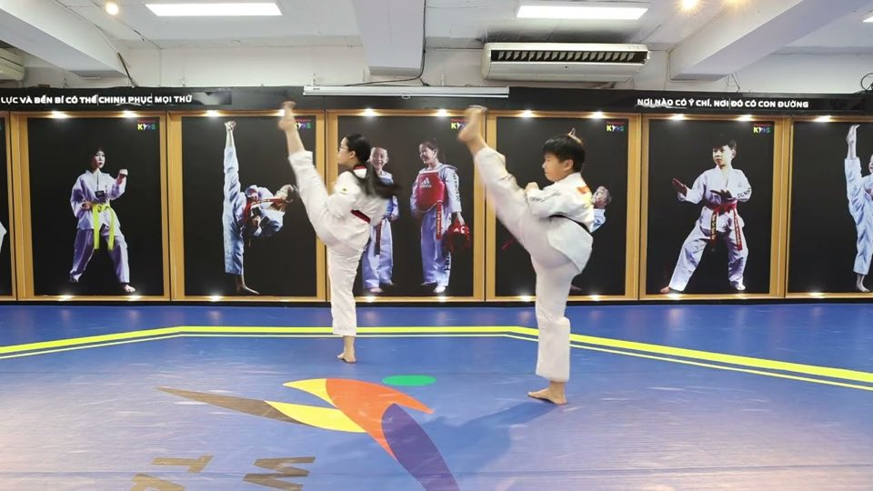
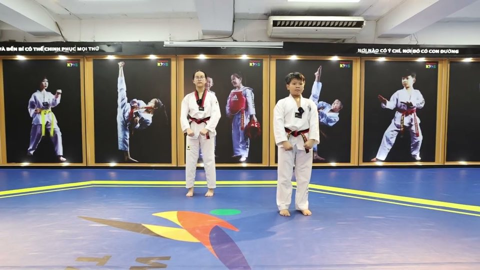
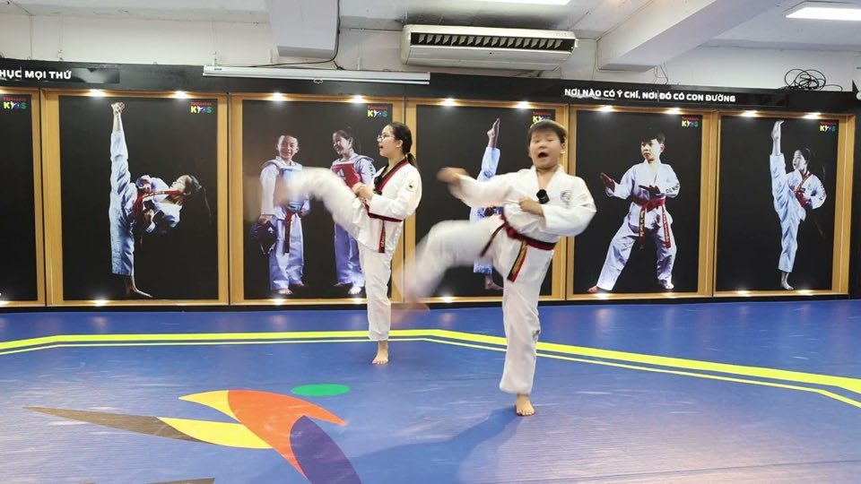
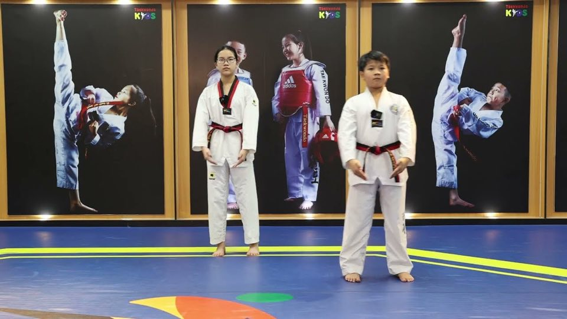
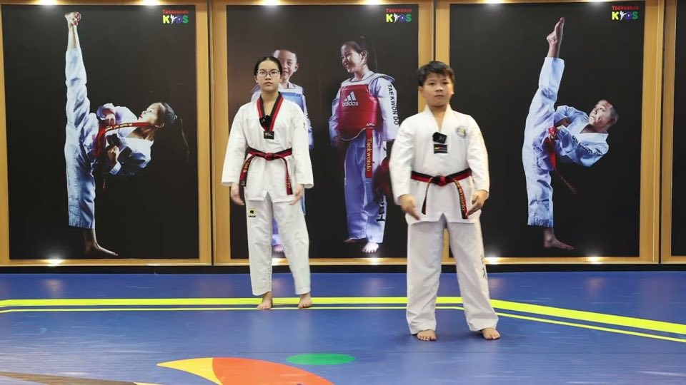
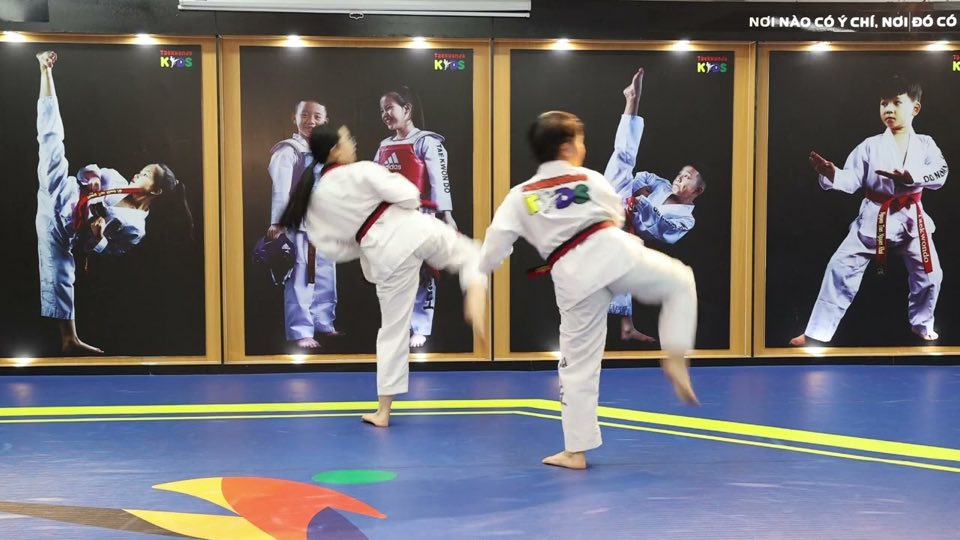

Chương trình thi lên đai
Nội dung thi từ cấp 9 đến cấp 1 theo Quy định thi thăng cấp, đẳng mới của Liên đoàn Taekwondo Việt Nam (Quyết định số 152/2025/QĐ-VTF, ngày 22/12/2025). Võ sinh và phụ huynh xem trước ở nhà để chuẩn bị cho kỳ thi thăng cấp.
Lộ trình 9 cấp thi
Bài thi lên cấp 9
Tấn, đấm, đỡ, đá căn bản và thuật ngữ tiếng Hàn. Từ 6 tuổi, tập tối thiểu 3 tháng.
Xem nội dung bài thi Đai Trắng 1 vạch → Đai Trắng 2 vạch xanh dươngBài thi lên cấp 8
Tấn, đấm, đỡ, đá căn bản và thuật ngữ tiếng Hàn. Từ 6 tuổi, tập tối thiểu 3 tháng.
Xem nội dung bài thi
Đai Trắng 2 vạch → Đai VàngBài thi lên cấp 7
Bài quyền Taegeuk Il-jang · song đấu: không · có video. Từ 6 tuổi, tập tối thiểu 3 tháng.
Xem nội dung bài thi
Đai Vàng → Đai Xanh LáBài thi lên cấp 6
Bài quyền Taegeuk E-jang · song đấu: không · có video. Từ 6 tuổi, tập tối thiểu 3 tháng.
Xem nội dung bài thi
Đai Xanh Lá → Đai Xanh DươngBài thi lên cấp 5
Bài quyền Taegeuk Sam-jang · song đấu: không · có video. Từ 7 tuổi, tập tối thiểu 3 tháng.
Xem nội dung bài thi Đai Xanh Dương → Đai Đỏ
Đai Xanh Dương → Đai Đỏ
Bài thi lên cấp 4
Bài quyền Taegeuk Sa-jang · song đấu: 2 hiệp × 30 giây · có video. Từ 7 tuổi, tập tối thiểu 3 tháng.
Xem nội dung bài thi
Đai Đỏ → Đai Đỏ 1 vạch đenBài thi lên cấp 3
Bài quyền Taegeuk Oh-jang · song đấu: 2 hiệp × 45 giây · có video. Từ 7 tuổi, tập tối thiểu 3 tháng.
Xem nội dung bài thi
Đai Đỏ 1 vạch đen → Đai Đỏ 2 vạch đenBài thi lên cấp 2
Bài quyền Taegeuk Yook-jang · song đấu: 2 hiệp × 1 phút · có video. Từ 7 tuổi, tập tối thiểu 3 tháng.
Xem nội dung bài thi
Đai Đỏ 2 vạch đen → Đai Đỏ 3 vạch đenBài thi lên cấp 1
Bài quyền Taegeuk Chil-jang · song đấu: 2 hiệp × 1 phút · có video. Từ 8 tuổi, tập tối thiểu 3 tháng.
Xem nội dung bài thiĐiều kiện dự thi
Võ sinh phải tập đủ thời gian tối thiểu và đạt độ tuổi quy định mới được dự thi. Tuổi tính theo năm; dòng in nghiêng là kỳ thi sớm nhất theo lộ trình chuẩn trong năm.
| Cấp dự thi | Màu đai | Thời gian tối thiểu | Độ tuổi |
|---|---|---|---|
| Cấp 10 | Đai Trắng (nhập môn) | — | Từ 6 tuổi |
| Thi lên cấp 9 | Đai Trắng 1 vạch xanh dương | 3 tháng | Từ 6 tuổi Quý I của năm dự thi |
| Thi lên cấp 8 | Đai Trắng 2 vạch xanh dương | 3 tháng | Từ 6 tuổi Quý II của năm dự thi |
| Thi lên cấp 7 | Đai Vàng hoặc Đai Trắng 3 vạch xanh dương | 3 tháng | Từ 6 tuổi Quý III của năm dự thi |
| Thi lên cấp 6 | Đai Xanh Lá hoặc Đai Trắng 4 vạch xanh dương | 3 tháng | Từ 6 tuổi Quý IV của năm dự thi |
| Thi lên cấp 5 | Đai Xanh Dương | 3 tháng | Từ 7 tuổi Quý I của năm dự thi |
| Thi lên cấp 4 | Đai Đỏ | 3 tháng | Từ 7 tuổi Quý II của năm dự thi |
| Thi lên cấp 3 | Đai Đỏ 1 vạch đen | 3 tháng | Từ 7 tuổi Quý III của năm dự thi |
| Thi lên cấp 2 | Đai Đỏ 2 vạch đen | 3 tháng | Từ 7 tuổi Quý IV của năm dự thi |
| Thi lên cấp 1 | Đai Đỏ 3 vạch đen | 3 tháng | Từ 8 tuổi Quý I của năm dự thi |
Bốn kỳ thi mỗi năm
Mỗi câu lạc bộ được tổ chức hoặc tham gia tối đa bốn kỳ thi thăng cấp một năm. Võ sinh không dự thi hoặc thi chưa đạt sẽ thi lại ở kỳ sau.
Bài thi gồm những gì
Kỹ thuật căn bản
Tấn, đấm, đỡ, đá theo từng cấp; từ cấp 4 thêm ba nguyên tắc phát lực (bình thường, liên tục, nhanh). Giám khảo đồng thời xem tố chất thể lực, sự tập trung, chiều cao, cân nặng.
Bài quyền
Từ cấp 7 đến cấp 1, mỗi cấp một bài Taegeuk (1 đến 7). Chấm thuộc quyền, kỹ thuật chính xác, biên độ, hướng nhìn, thăng bằng, tiếng hét, nhịp điệu và phong cách trình bày.
Đối luyện
Phân thế bài quyền và tự vệ cơ bản. Song đấu bắt đầu từ cấp 4: 2 hiệp × 30 giây (cấp 4), 2 hiệp × 45 giây (cấp 3), 2 hiệp × 1 phút (cấp 2 và cấp 1).
Thể lực, công phá
Không bắt buộc. Đơn vị tổ chức có thể bổ sung nội dung thể lực, công phá phù hợp với từng cấp đai.
Chấm điểm & trang phục
Cách tính đạt
- Mỗi phần thi tối đa 100 điểm, giám khảo chấm trực tuyến, phần mềm tự tổng hợp.
- Đạt khi điểm trung bình từ 70 trở lên và không có 2/3 số giám khảo cho dưới 70.
- Phần kỹ thuật, đối luyện phải đạt; phần công phá, thể lực (nếu có) không bị điểm liệt (0 điểm).
- Kết quả chỉ được công nhận khi kỳ thi đăng ký trực tuyến với Liên đoàn. Võ sinh đạt được cấp thẻ chứng nhận theo mẫu thống nhất toàn quốc.
Trang phục & bảo hộ
- Võ phục trắng cổ chữ V, cổ áo màu trắng (từ đai đỏ cấp 1 trở xuống).
- Phù hiệu Liên đoàn địa phương bên ngực phải, phù hiệu CLB bên ngực trái; tên đơn vị phía sau lưng.
- Bảng tên dưới phù hiệu (cấp 8 đến cấp 1): nền xanh dương, chữ trắng.
- Bảo hộ: áo giáp, mũ bảo vệ đầu, bảo vệ hạ bộ (ban tổ chức cung cấp); bảo vệ răng, cẳng tay, ống quyển (tự trang bị); bao tay, bảo vệ bàn chân khuyến khích dùng.
Cấp 10 – Đai Trắng nhập môn
Võ sinh mới nhập môn từ 6 tuổi trở lên được đeo Đai trắng cấp 10. Dưới 6 tuổi chưa được dự thi lên cấp; tuổi tính theo năm tham gia tập luyện.
- Kiểm tra hằng tháng: tố chất thể lực (nhanh, mạnh, bền, mềm dẻo, khéo léo / phối hợp vận động), sự tập trung, chiều cao, cân nặng. Kết quả được huấn luyện viên phụ trách ký xác nhận và gửi cho phụ huynh.
- Tập các kỹ thuật căn bản để chuẩn bị thi lên cấp 9.
Thuật ngữ làm quen:
- Taekwondo (태권도) – Taekwondo
- Dojang (도장) – Võ đường (nơi tập luyện)
- Dobok (도복) – Võ phục
- Sabeomnim (사범님) – Võ sư / Huấn luyện viên
- Charyeot (차렷) – Nghiêm
- Kyeong-rye (경례) – Chào
- Joonbi (준비) – Chuẩn bị
- Sijak (시작) – Bắt đầu
- Kallyeo (갈려) – Tạm dừng
- Kyesok (계속) – Tiếp tục
- Geuman (그만) – Dừng lại
- Baro (바로) – Trở về vị trí ban đầu
- Swieo (쉬어) – Nghỉ ngơi
Về giáo trình này. Nội dung thi lấy theo Quy định thi thăng cấp, đẳng của Liên đoàn Taekwondo Việt Nam (ban hành kèm Quyết định số 152/2025/QĐ-VTF ngày 22/12/2025, căn cứ Quy định thi thăng cấp, đẳng hiện hành của Kukkiwon). Đơn vị tổ chức có thể bổ sung nội dung thể lực, công phá phù hợp với từng cấp đai — hãy hỏi huấn luyện viên trực tiếp của con để nắm chính xác nội dung kỳ thi sắp tới.